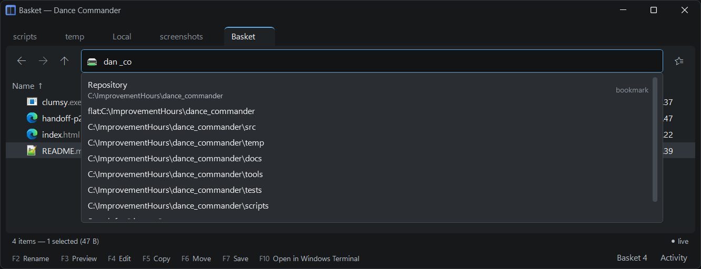
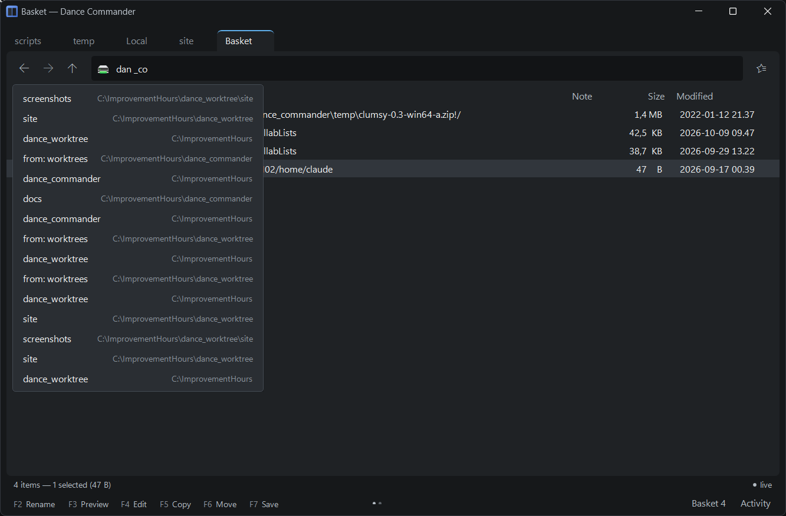
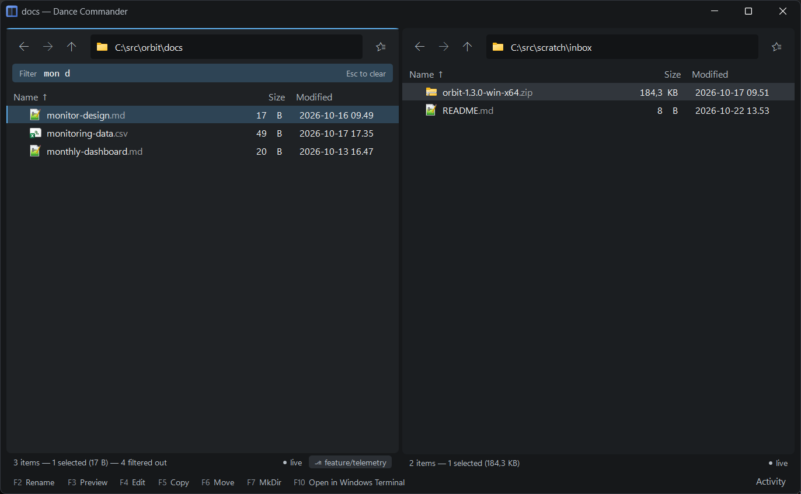
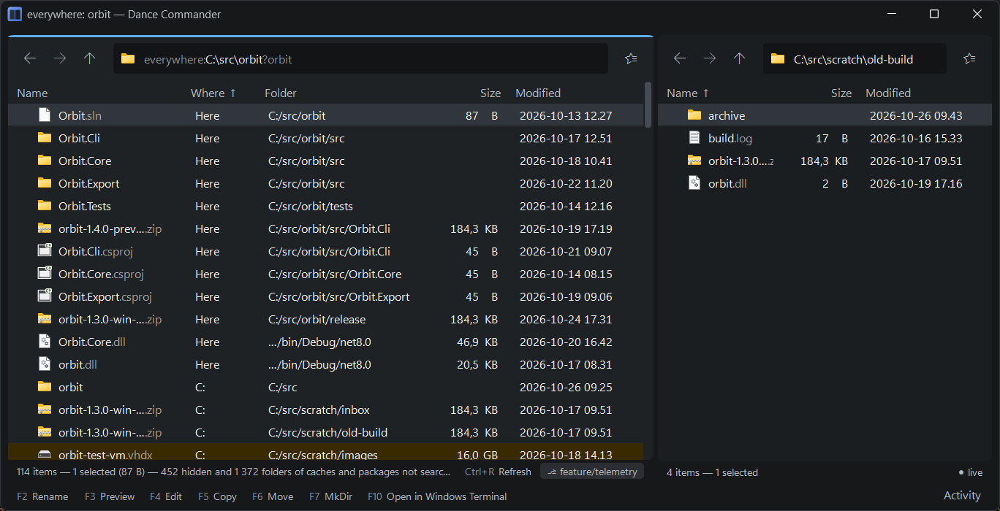
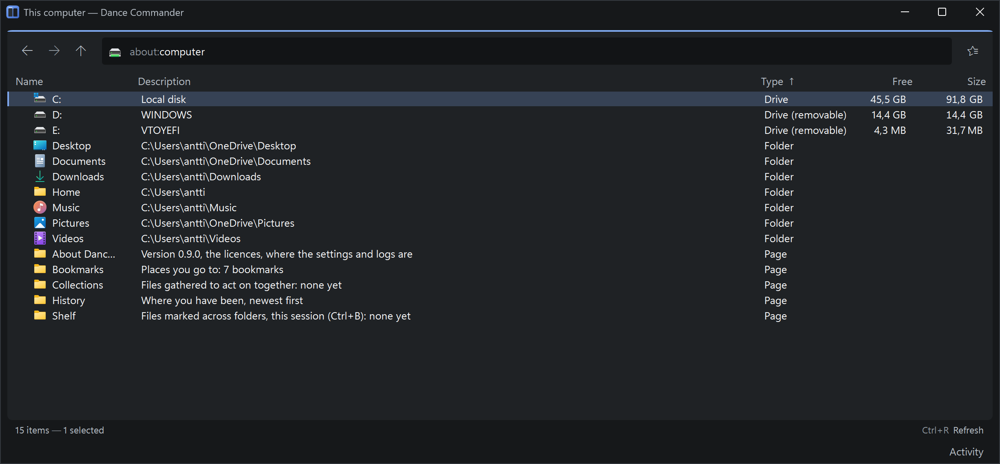

Getting around
Moving between places is the thing Dance Commander most wants to be fast at. Nearly everything here works the same in a local folder, on a server, inside an archive or in a search result; the few exceptions say so.
The address bar
Ctrl+L puts you in it with the whole address selected, as in a browser, so
you can type over it straight away. Esc closes the suggestions; pressed again, it puts
the address back as it was and returns you to the listing. It accepts a Windows path, a full address such as
sftp://deploy@build01/var/log (see addresses), or
the name of a bookmark.
It also takes the path of a file on this computer. An archive such as C:\dl\pack.zip opens as a
folder; any other file opens the folder it is in, with the cursor on it.
- It completes as you type, the way a browser does. The rest of the best match is filled in after the caret, selected: Enter goes there, Tab accepts it and leaves the caret at the end so you can keep typing, and Backspace drops it. A bookmark whose name starts with what you typed wins; otherwise the shortest place you have been that carries on from it. A folder that no longer exists is not filled in.
- The list below it starts with the folders on disk that carry on from what
you typed:
C:\Users\Anoffers the folders inC:\Usersstarting with “An”. Bookmarks and recent places that contain what you typed, anywhere in them, follow. ↑ and ↓ write the highlighted entry into the box, so you can type a\and carry on into it. Folders are offered for local disks and network shares, not for servers, which would have to be connected to while you type. - It searches when the text can't be an address. A bare word with no
\,/or:is a search of the whole computer, unless it names a bookmark. Start with?to always search:?dowsearches even thoughdowwould go to Downloads. The search is always the last entry in the list, so it never pushes a place out of the way. A mistyped path is still an error, not a search for itself.

Back, forward, up
Each tab keeps its own history. Alt+← and Alt+→, or
the mouse's side buttons, go back and forward. Backspace goes up to the parent; up from
a drive's root goes to about:computer, with the cursor on the drive you left.
Right-click the Back or Forward button, or hold it down, and it lists the places behind or ahead, nearest first, so three steps back are one pick. Hold the Up button for the folders above this one, up to This computer. Right-clicking Up opens the parent folder's own menu, and files dropped on Up go into the parent folder.

Every place you visit also goes into the global history, which feeds the address bar's
completion and the about:history page. A server's address is recorded without its
password.
Tabs
Each pane has its own tabs, and the strip of them appears once a pane has more than one.
- Opening. Ctrl+T opens a copy of the tab you are in, its Back and Forward included, with the keyboard in its address bar: type where to go, or press Esc to stay. Ctrl+Enter opens the folder or archive under the cursor in a new tab, or a tab for each of several marked folders. A middle click on a folder does the same; in Settings, Middle click can send it to the other pane instead. Open in other pane, in the menu and the palette, does that from the keyboard.
- Switching. Ctrl+PgDn and Ctrl+PgUp step through the tabs; Ctrl+Tab cycles forward. A tab you come back to is as you left it: scrolled to the same place, the cursor on the same row, the same rows marked.
- Moving. Drag a tab along the strip to reorder it, or onto the other pane to move it there. From the keyboard, Ctrl+Shift+PgUp and PgDn move it along the strip, and Ctrl+Alt+← and → move it to the left or right pane. It keeps its history and its view, and a question it was asking goes with it. A command line open in the pane closes. A pane's last tab stays where it is.
- Closing. Ctrl+W, or the cross on the tab.
When you close the window, the tabs in both panes, which one was in front, the active pane and
each tab's recent history are saved and restored on the next launch. Tabs behind the front one
are only listed when you first click them, so a dozen restored tabs don't slow the start down.
A folder that has gone since opens its parent, with a note saying so. Starting
DanceCommander C:\work while it is already running adds a tab for that folder to the
running window.
Dragging to a place you can't see
While you drag files, hold the pointer still over another tab and after a moment it comes to the front; hold it over a folder a little longer and the pane goes into it. A thin line fills under the target while it waits, so you can move off before it opens. Back, Forward and Up work the same way, and Up goes on climbing while you stay on it. Holding the drag on the last row in sight scrolls the listing down, and on the first row up, faster the nearer you are to its edge. The drop then lands wherever you have arrived.
Quick filter: just type
Typing letters while the listing has focus narrows it to the names that match, with the best match under the cursor, so Enter opens what you were typing towards. A bar above the listing shows the filter and how many rows it is holding back. Esc clears it, and it also clears when you leave the folder.
- A plain word means “the name contains this”.
monfinds CPU monitor, disk monitor and pokemon. - Several words must all match, in any order:
mon dleaves disk monitor. - A word with
*or?is a wildcard pattern:*.cs. - Matches at the start of the name, or at the start of a word in it, come first.
While a filter is running, Space types a space and Backspace deletes a character; otherwise they mark a row and go up a folder.

Search and flatten
Searches look at names, by the same rule as the quick filter, not at what is inside files. There is no index to build or keep up to date: a search reads the disk as it goes, and results stream in while it walks, with a count of what it has read so far. Esc stops it, and a stopped search says it is partial.
Everywhere, from here
A word typed in the address bar searches the whole computer, starting where you are, as a browser's address bar searches the web. It walks the places in the order what you want is likely to be there: the folder you are in, then Desktop, Documents, Downloads and OneDrive, the rest of your home folder, the rest of the system drive, the other fixed and removable drives, Program Files, and Windows last. Network drives are left out. Matches from nearby are on screen while the far places are still being read.
- A Where column says which place each row came from, and the rows are sorted likeliest
first: by place, then things you made before things a build made (
.dllfiles, anything underbinorobj), then how well the name matches, then how recently it changed. - Hidden folders, caches and package folders such as
node_modulesare not searched, and the footer says how many were left out. Ctrl+H searches them too. - Backspace goes back to the folder you started from.
- On a server or inside an archive, the address bar searches only the folder you are in and below it, as Ctrl+S does.

Here, and below
Ctrl+S searches only the current folder and everything below it.
Ctrl+Shift+F flattens the tree: every file below this folder in one listing, with a column saying where each lives. Sort it by size to find what is filling a disk, or by date to find what changed today.
Searches and flattened trees are ordinary places (everywhere:, search:
and flat: addresses), so you can sort
them, filter them, mark rows, copy with F5, bookmark them and go back to them.
Ctrl+Shift+Enter takes you to the folder a result actually lives
in.
Bookmarks
Ctrl+D bookmarks where you are. Give it a name like Work/Build
logs and it goes under a Work heading. Any address can be bookmarked, a server
folder as easily as C:\src; opening a server bookmark connects when you open it.
The first time you start Dance Commander, it bookmarks your home folder and the usual folders, and puts the folders pinned in Explorer's Quick access under a Quick access heading. Pins added later can be brought over with Import bookmarks from Explorer's Quick access in the command palette; it adds only what isn't bookmarked yet, and Ctrl+Z takes them out again.
The Bookmarks button at the right of the toolbar opens the quick list. To rename, regroup or
remove many at once, open about:bookmarks (Ctrl+Shift+O,
or Manage bookmarks in that list),
where they are a listing like any other: F2 renames, F6 moves to a group,
Del removes, Ctrl+Z puts back. The underlying file,
bookmarks.json, is yours to edit too.
The application's own pages
| Address | What it shows |
|---|---|
about:computer | This computer: drives with their free space, the known folders (Home, Documents, Downloads, …) and the pages below. Alt+Home |
about:bookmarks | Your bookmarks; groups are folders. Ctrl+Shift+O |
about:history | Where you have been, newest first. Del forgets a visit. Ctrl+Shift+H |
about:collections | Your saved collections of files |
about:shelf | The shelf |
about:app | The version, the licences, and where the settings and logs are |
The keys are also in the command palette, as Go to: This computer, Go to: Bookmarks and Go to: History.
A drive that doesn't answer (a disconnected network drive) shows as not responding rather than freezing the page.

The location chip
The folder's icon at the left of the address bar stands for the folder you are in.
- Click it, or press Ctrl+., for the folder's own menu: paste, new folder, open a terminal here, git status, search here, bookmark, copy its path. The same menu opens when you right-click empty space in the listing, and it is the last item of every row's menu too.
- Drag it to drag the folder itself: to the other pane to copy it there, or to another program. Hold Shift to move instead.
- Drop files on it to put them in this folder, even when the listing is too full to have any empty space to aim at.
Each folder remembers how you left it
Sort order, and whether hidden entries are shown, are remembered per folder. Set a downloads folder to newest first once, and it stays that way, while your source folders stay sorted by name.
By default folders and files are sorted together, by name, and names sort naturally:
file9 before file10. Sort by type to gather the folders, or turn on
Folders before files in Settings (Ctrl+,) for every new tab; a folder
you have sorted another way on purpose keeps its own order. Hidden files and dotfiles are hidden by
default, and the footer always says how many and that Ctrl+H shows them.
Live folders
Local folders update by themselves when something else changes them: a build writing output, a download finishing. The footer says live when that is happening. Rows don't jump while your pointer is on them. Servers have no way to announce changes, so their footer offers Ctrl+R instead.
OneDrive folders
In a OneDrive folder, a file that is only online has a small cloud after its name, and one you have set to be always kept on this device has a pin, where Explorer puts them. To keep the listing quiet they show on the cursor's row only; OneDrive status in Settings shows them on every row. Previewing an online-only file doesn't download it: the preview shows OneDrive's own thumbnail, or says that it would have to download the file.